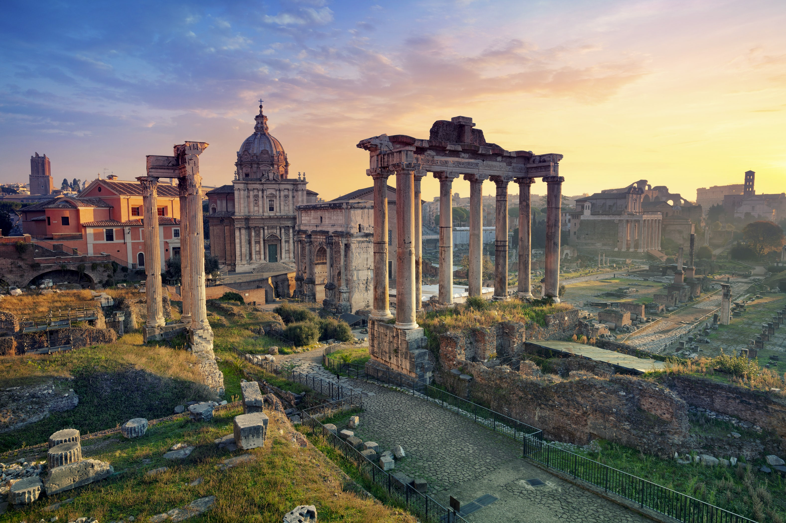

The Colosseum is the main symbol of Rome. It is an imposing construction that, with almost 2,000 years of history, will bring you back in time to discover the way of life in the Roman Empire.
The construction of the Colosseum began in the year 72 under the empire of Vespasian and was finished in the year 80 during the rule of the emperor Titus. After completion, the Colosseum became the greatest Roman amphitheatre, measuring 188 meters in length, 156 meters in width and 57 meters in height.
The construction of the Colosseum began in the year 72 under the empire of Vespasian and was finished in the year 80 during the rule of the emperor Titus. After completion, the Colosseum became the greatest Roman amphitheatre, measuring 188 meters in length, 156 meters in width and 57 meters in height.
During the Roman Empire and under the motto of "Bread and Circuses" the Roman Colosseum (known then as Flavian Amphitheatre) allowed more than 50,000 people to enjoy its finest spectacles. The exhibitions of exotic animals, executions of prisoners, recreations of battles and gladiator fights kept the Roman people entertained for years.
The Colosseum remained active for over 500 years. The last recorded games in history were celebrated in the 6th century.
Since the 6th century the Colosseum has suffered lootings, earthquakes and even bombings during World War Two. Demonstrating a great survival instinct, the Colosseum was used for decades as a storehouse, church, cemetery and even a castle for nobility.
The Colosseum remained active for over 500 years. The last recorded games in history were celebrated in the 6th century.
Since the 6th century the Colosseum has suffered lootings, earthquakes and even bombings during World War Two. Demonstrating a great survival instinct, the Colosseum was used for decades as a storehouse, church, cemetery and even a castle for nobility.
At present the Colosseum is, along with the Vatican City, Rome's greatest tourist attraction. Each year 6 million tourists visit it. On 7 July 2007 the Colosseum became one of the Seven Wonders of the Modern World.

Trevi Fountain is the most beautiful fountain in Rome. Measuring some 20 meters in width by 26 meters in height, Trevi Fountain is also the largest fountain in the city.
The origins of the fountain go back to the year 19 B.C., in which period the fountain formed the end of the Aqua Virgo aqueduct. The first fountain was built during the Renaissance, under the direction of Pope Nicholas V.
The final appearance of the Trevi Fountain dates from 1762, when after many years of works at the hand of Nicola Salvi, it was finalized by Giuseppe Pannini.
Interestingly enough, the name of Trevi derives from Tre Vie (three ways), since the fountain was the meeting point of three streets.
The origins of the fountain go back to the year 19 B.C., in which period the fountain formed the end of the Aqua Virgo aqueduct. The first fountain was built during the Renaissance, under the direction of Pope Nicholas V.
The final appearance of the Trevi Fountain dates from 1762, when after many years of works at the hand of Nicola Salvi, it was finalized by Giuseppe Pannini.
Interestingly enough, the name of Trevi derives from Tre Vie (three ways), since the fountain was the meeting point of three streets.
For us Trevi Fountain is the most beautiful fountain in the world. Whether under daylight or warmly lit up at night, the fountain is never lonely.
One thing that can dampen the mood is that the area is full of people trying to sell roses in a pushy way, but simply ignoring them is enough to be able to continue enjoying such a special place
One thing that can dampen the mood is that the area is full of people trying to sell roses in a pushy way, but simply ignoring them is enough to be able to continue enjoying such a special place
It was built as a water source for the City, constructed in the same material as the Colosseum, travertine stone.
This tradition of throwing coins also dates back to the ancient Romans who often threw coins in water to make the gods of water favor their journey or help them get back home safely.
This tradition of throwing coins also dates back to the ancient Romans who often threw coins in water to make the gods of water favor their journey or help them get back home safely.

The Roman Forum was where religious and public life in ancient Rome took place. The Forum is, along with the Colosseum, the greatest sign of the splendour of the Roman Empire that can be seen today.
After the fall of the Empire, the Roman Forum was forgotten and little by little it was buried under the earth. Although in the 16th century the existence and location of the Forum was already known, it was not until the 20th century that excavations were carried out.
Interestingly, the place where the Forum was built was originally a marshy area. In the 6th century B.C. the area was drained by means of the Cloaca Maxima, one of the first sewer systems in the world.
After the fall of the Empire, the Roman Forum was forgotten and little by little it was buried under the earth. Although in the 16th century the existence and location of the Forum was already known, it was not until the 20th century that excavations were carried out.
Interestingly, the place where the Forum was built was originally a marshy area. In the 6th century B.C. the area was drained by means of the Cloaca Maxima, one of the first sewer systems in the world.
At first, the Forum essentially served as a marketplace for day-to-day shopping. Over time, it became much more versatile and functional, as public affairs were held in the area. Historians estimate that the rise of public events in the Roman Forum first took place around 500 B.C., when the Roman Republic started.
